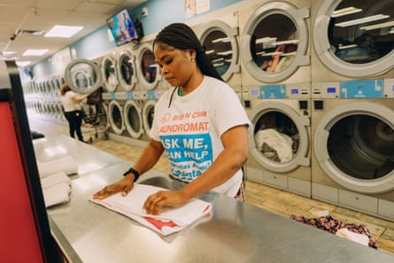

T he first time Hyacinth Tucker did someone else’s laundry, she earned $20. “I didn’t think of it as a business. This was just another side hustle,” she said. It was 2022 and the Maryland -based army veteran needed money.
She was going through a divorce, and Covid had staunched the flow of income from the event facilities she owned, so she had taken to driving for Uber and pet-sitting.
Tucker was visiting a friend whose dirty clothing was strewn on every surface. Apologizing for the mess, Tucker’s friend said she wished a fairy godmother would gather up all the laundry and do it for her. Tucker took on the gig.
A week later, at a mother’s group meetup, she casually mentioned that she had helped a friend out with laundry. Ears perked up. “Everyone looked at me like, ‘You’re doing laundry? Can you come do my laundry?’” she said. Tucker ripped a piece of paper out of her notebook and passed it around the group, expecting one or two sign-ups. When she received the paper back, both sides were scrawled with names. “At that point I realized I could turn this into something a little bit bigger,” she said.
Tucker did her research and learned that laundry is a $16bn industry in the United States.
In the coming months, Tucker hired two drivers and poured her heart into the business.
“I did the opposite of what you’re supposed to do, which is to start with where you are, get deep into that market, then expand,” she said. “If I met a potential client and they said, ‘I live in Alexandria. Do you come out that way?’ I said: ‘We sure do.’ We had clients in every single place you can imagine around DC and northern Virginia. It was a logistical nightmare.”
Tucker dedicated herself to marketing, passing out business cards, attending networking events and even wearing T-shirts advertising the business.
Savinia Wiah, a Laundry Basket employee, folds clothing at a partner laundromat in Hyattsville, Maryland.Photograph: Stephen Voss/The Guardian
She tried to take out a bank loan, but it wasn’t approved; instead, she took out what she called “predatory loans” for a quick infusion of cash, but soon found those were unsustainable.
She eventually found success in pitch competitions – participating in 18 to date, she said – winning several, including one for female veterans.
“My story really resonated with people,” she said, adding that she had amassed over $100,000 in winnings and grants over the past two years. Trust is key in the laundry business, Tucker said. “For most people, their first thought is: ‘So you’re gonna be washing my underwear?’” she said. “That’s when I knew I had to come out from behind the scenes and be the face of the company.”
She has also collected private investments from friends and family. “One of the reasons I decided to invest in Hyacinth is because of her character,” said Derrick Terry, a federal records and information officer who has known Tucker since high school. “She’s always smiling and she brings a personal approach that most other businesses don’t have.”
Within two years, revenues grew tenfold and Tucker and her staff were washing up to 7,000lb of laundry a month. In addition to paying clients, the Laundry Basket partners with a Baltimore-based outreach organization to launder donated clothing before it’s distributed to shelters.
Today Tucker manages a staff of three, including an executive assistant and an operations manager. “We’re able to hire people, keep their households going, pay their family expenses – that’s the greatest thing,” she said.
And Tucker wants others to share her success. The Laundry Basket takes on high school interns from a local career center, and in 2024, Tucker founded the Laundry Basket Institute to train people interested in kickstarting their own careers in the business. So far she’s trained five students through the program.
The organization provides career training to those who may have barriers to traditional employment, including formerly incarcerated people, youth who are ageing out of foster care and individuals with disabilities, in the laundry and dry cleaning industry.
“We are deeply focused on economic mobility,” she said, adding that her training program pays sustainable wages and offers leadership development and opportunities to grow “within the Laundry Basket ecosystem or pursue other business ventures”.
“Rather than trying to ‘get out’ of the industry, we’re redefining what it can look like to work in this field,” Tucker said. “It can be a stable, sustainable and empowering career path.”
In addition to the Laundry Basket Institute, Tucker has expanded into dry cleaning and alteration services, and is working with a chemist to formulate a Laundry Basket-branded detergent. She soon hopes to transition the business toward a franchise model, with operations nationwide. “When you think of laundry, I want you to think of the Laundry Basket,” Tucker said.